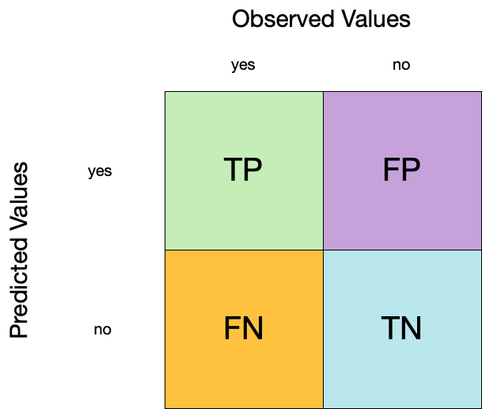

augment(forested_fit, new_data = forested_train)
#> # A tibble: 8,749 × 22
#> .pred_class .pred_Yes .pred_No forested year elevation eastness roughness
#> <fct> <dbl> <dbl> <fct> <dbl> <dbl> <dbl> <dbl>
#> 1 Yes 0.931 0.0690 Yes 1997 66 82 10
#> 2 Yes 0.983 0.0172 No 1997 284 -99 58
#> 3 Yes 0.960 0.0401 Yes 2022 130 86 15
#> 4 Yes 0.870 0.130 Yes 2021 202 -55 3
#> 5 Yes 0.823 0.177 Yes 1995 75 -89 1
#> 6 Yes 0.758 0.242 No 1995 110 -53 5
#> 7 Yes 0.823 0.177 Yes 2022 111 73 12
#> 8 No 0.467 0.533 Yes 1997 230 96 14
#> 9 Yes 0.983 0.0172 Yes 2002 160 -88 13
#> 10 Yes 0.871 0.129 Yes 2020 39 9 6
#> # ℹ 8,739 more rows
#> # ℹ 14 more variables: tree_no_tree <fct>, dew_temp <dbl>, precip_annual <dbl>,
#> # temp_annual_mean <dbl>, temp_annual_min <dbl>, temp_annual_max <dbl>,
#> # temp_january_min <dbl>, vapor_min <dbl>, vapor_max <dbl>,
#> # canopy_cover <dbl>, lon <dbl>, lat <dbl>, land_type <fct>, county <fct>4 - Evaluating models
Introduction to tidymodels
Confusion matrix 


Confusion matrix 
Confusion matrix 
Metrics for model performance 

Metrics for model performance 
Metrics for model performance 

Metrics for model performance 
We can use metric_set() to combine multiple calculations into one
forested_metrics <- metric_set(accuracy, specificity, sensitivity)
augment(forested_fit, new_data = forested_train) |>
forested_metrics(truth = forested, estimate = .pred_class)
#> # A tibble: 3 × 3
#> .metric .estimator .estimate
#> <chr> <chr> <dbl>
#> 1 accuracy binary 0.851
#> 2 specificity binary 0.642
#> 3 sensitivity binary 0.931Metrics for model performance 
Metrics and metric sets work with grouped data frames!
Your turn

Apply the forested_metrics metric set to augment()
output grouped by tree_no_tree.
Do any metrics differ substantially between groups?
05:00
ROC curves
For an ROC (receiver operator characteristic) curve, we plot
- the false positive rate (1 - specificity) on the x-axis
- the true positive rate (sensitivity) on the y-axis
with sensitivity and specificity calculated at all possible thresholds.

ROC curves
We can use the area under the ROC curve as a classification metric:
- ROC AUC = 1 üíØ
- ROC AUC = 1/2 üò¢

ROC curves 
# Assumes _first_ factor level is event; there are options to change that
augment(forested_fit, new_data = forested_train) |>
roc_curve(truth = forested, .pred_Yes) |>
slice(1, 20, 50)
#> # A tibble: 3 × 3
#> .threshold specificity sensitivity
#> <dbl> <dbl> <dbl>
#> 1 -Inf 0 1
#> 2 0.143 0.267 0.990
#> 3 0.385 0.571 0.951
augment(forested_fit, new_data = forested_train) |>
roc_auc(truth = forested, .pred_Yes)
#> # A tibble: 1 × 3
#> .metric .estimator .estimate
#> <chr> <chr> <dbl>
#> 1 roc_auc binary 0.881ROC curve plot 
Your turn
Compute and plot an ROC curve for your current model.
What data are being used for this ROC curve plot?
05:00
Dangers of overfitting

Dangers of overfitting ⚠️

Dangers of overfitting ⚠️ 
forested_fit |>
augment(forested_train)
#> # A tibble: 8,749 × 22
#> .pred_class .pred_Yes .pred_No forested year elevation eastness roughness
#> <fct> <dbl> <dbl> <fct> <dbl> <dbl> <dbl> <dbl>
#> 1 Yes 0.931 0.0690 Yes 1997 66 82 10
#> 2 Yes 0.983 0.0172 No 1997 284 -99 58
#> 3 Yes 0.960 0.0401 Yes 2022 130 86 15
#> 4 Yes 0.870 0.130 Yes 2021 202 -55 3
#> 5 Yes 0.823 0.177 Yes 1995 75 -89 1
#> 6 Yes 0.758 0.242 No 1995 110 -53 5
#> 7 Yes 0.823 0.177 Yes 2022 111 73 12
#> 8 No 0.467 0.533 Yes 1997 230 96 14
#> 9 Yes 0.983 0.0172 Yes 2002 160 -88 13
#> 10 Yes 0.871 0.129 Yes 2020 39 9 6
#> # ℹ 8,739 more rows
#> # ℹ 14 more variables: tree_no_tree <fct>, dew_temp <dbl>, precip_annual <dbl>,
#> # temp_annual_mean <dbl>, temp_annual_min <dbl>, temp_annual_max <dbl>,
#> # temp_january_min <dbl>, vapor_min <dbl>, vapor_max <dbl>,
#> # canopy_cover <dbl>, lon <dbl>, lat <dbl>, land_type <fct>, county <fct>We call this “resubstitution” or “repredicting the training set”
Dangers of overfitting ⚠️ 
We call this a “resubstitution estimate”
Dangers of overfitting ⚠️ 
Dangers of overfitting ⚠️ 
⚠️ Remember that we’re demonstrating overfitting
⚠️ Don’t use the test set until the end of your modeling analysis
Your turn
Use augment() and a metric function to compute a classification metric like brier_class().
Compute the metrics for both training and testing data to demonstrate overfitting!
Notice the evidence of overfitting! ⚠️
05:00
Dangers of overfitting ⚠️ 
What if we want to compare more models?
And/or more model configurations?
And we want to understand if these are important differences?
Cross-validation

Cross-validation

Your turn
If we use 10 folds, what percent of the training data
- ends up in analysis
- ends up in assessment
for each fold?

03:00
Cross-validation 

vfold_cv(forested_train) # v = 10 is default
#> # 10-fold cross-validation
#> # A tibble: 10 × 2
#> splits id
#> <list> <chr>
#> 1 <split [7874/875]> Fold01
#> 2 <split [7874/875]> Fold02
#> 3 <split [7874/875]> Fold03
#> 4 <split [7874/875]> Fold04
#> 5 <split [7874/875]> Fold05
#> 6 <split [7874/875]> Fold06
#> 7 <split [7874/875]> Fold07
#> 8 <split [7874/875]> Fold08
#> 9 <split [7874/875]> Fold09
#> 10 <split [7875/874]> Fold10Cross-validation 
What is in this?
Cross-validation 
Cross-validation 
We’ll use this setup:
set.seed(123)
forested_folds <- vfold_cv(forested_train, v = 10)
forested_folds
#> # 10-fold cross-validation
#> # A tibble: 10 × 2
#> splits id
#> <list> <chr>
#> 1 <split [7874/875]> Fold01
#> 2 <split [7874/875]> Fold02
#> 3 <split [7874/875]> Fold03
#> 4 <split [7874/875]> Fold04
#> 5 <split [7874/875]> Fold05
#> 6 <split [7874/875]> Fold06
#> 7 <split [7874/875]> Fold07
#> 8 <split [7874/875]> Fold08
#> 9 <split [7874/875]> Fold09
#> 10 <split [7875/874]> Fold10Set the seed when creating resamples
Evaluating model performance 

forested_res |>
collect_metrics()
#> # A tibble: 3 × 6
#> .metric .estimator mean n std_err .config
#> <chr> <chr> <dbl> <int> <dbl> <chr>
#> 1 accuracy binary 0.704 10 0.00653 Preprocessor1_Model1
#> 2 brier_class binary 0.214 10 0.00349 Preprocessor1_Model1
#> 3 roc_auc binary 0.692 10 0.00496 Preprocessor1_Model1We can reliably measure performance using only the training data üéâ
Comparing metrics 
How do the metrics from resampling compare to the metrics from training and testing?
The ROC AUC previously was
- 0.88 for the training set
- 0.7 for test set
Remember that:
⚠️ the training set gives you overly optimistic metrics
⚠️ the test set is precious
Evaluating model performance 
# Save the assessment set results
ctrl_forested <- control_resamples(save_pred = TRUE)
forested_res <- fit_resamples(forested_wflow, forested_folds, control = ctrl_forested)
forested_res
#> # Resampling results
#> # 10-fold cross-validation
#> # A tibble: 10 × 5
#> splits id .metrics .notes .predictions
#> <list> <chr> <list> <list> <list>
#> 1 <split [7874/875]> Fold01 <tibble [3 × 4]> <tibble [0 × 3]> <tibble>
#> 2 <split [7874/875]> Fold02 <tibble [3 × 4]> <tibble [0 × 3]> <tibble>
#> 3 <split [7874/875]> Fold03 <tibble [3 × 4]> <tibble [0 × 3]> <tibble>
#> 4 <split [7874/875]> Fold04 <tibble [3 × 4]> <tibble [0 × 3]> <tibble>
#> 5 <split [7874/875]> Fold05 <tibble [3 × 4]> <tibble [0 × 3]> <tibble>
#> 6 <split [7874/875]> Fold06 <tibble [3 × 4]> <tibble [0 × 3]> <tibble>
#> 7 <split [7874/875]> Fold07 <tibble [3 × 4]> <tibble [0 × 3]> <tibble>
#> 8 <split [7874/875]> Fold08 <tibble [3 × 4]> <tibble [0 × 3]> <tibble>
#> 9 <split [7874/875]> Fold09 <tibble [3 × 4]> <tibble [0 × 3]> <tibble>
#> 10 <split [7875/874]> Fold10 <tibble [3 × 4]> <tibble [0 × 3]> <tibble>Evaluating model performance 
# Save the assessment set results
forested_preds <- collect_predictions(forested_res)
forested_preds
#> # A tibble: 8,749 × 7
#> .pred_class .pred_Yes .pred_No id .row forested .config
#> <fct> <dbl> <dbl> <chr> <int> <fct> <chr>
#> 1 Yes 0.953 0.0473 Fold01 2 No Preprocessor1_Model1
#> 2 Yes 0.6 0.4 Fold01 6 No Preprocessor1_Model1
#> 3 Yes 0.848 0.152 Fold01 7 Yes Preprocessor1_Model1
#> 4 Yes 0.941 0.0588 Fold01 36 Yes Preprocessor1_Model1
#> 5 Yes 0.895 0.105 Fold01 38 No Preprocessor1_Model1
#> 6 Yes 1 0 Fold01 58 Yes Preprocessor1_Model1
#> 7 No 0.187 0.812 Fold01 69 No Preprocessor1_Model1
#> 8 Yes 0.905 0.0952 Fold01 71 Yes Preprocessor1_Model1
#> 9 Yes 0.907 0.0930 Fold01 74 Yes Preprocessor1_Model1
#> 10 Yes 0.904 0.0962 Fold01 80 Yes Preprocessor1_Model1
#> # ℹ 8,739 more rowsEvaluating model performance 
forested_preds |>
group_by(id) |>
forested_metrics(truth = forested, estimate = .pred_class)
#> # A tibble: 30 × 4
#> id .metric .estimator .estimate
#> <chr> <chr> <chr> <dbl>
#> 1 Fold01 accuracy binary 0.729
#> 2 Fold02 accuracy binary 0.685
#> 3 Fold03 accuracy binary 0.687
#> 4 Fold04 accuracy binary 0.711
#> 5 Fold05 accuracy binary 0.736
#> 6 Fold06 accuracy binary 0.670
#> 7 Fold07 accuracy binary 0.699
#> 8 Fold08 accuracy binary 0.710
#> 9 Fold09 accuracy binary 0.699
#> 10 Fold10 accuracy binary 0.719
#> # ℹ 20 more rowsWhere are the fitted models? 
forested_res
#> # Resampling results
#> # 10-fold cross-validation
#> # A tibble: 10 × 5
#> splits id .metrics .notes .predictions
#> <list> <chr> <list> <list> <list>
#> 1 <split [7874/875]> Fold01 <tibble [3 × 4]> <tibble [0 × 3]> <tibble>
#> 2 <split [7874/875]> Fold02 <tibble [3 × 4]> <tibble [0 × 3]> <tibble>
#> 3 <split [7874/875]> Fold03 <tibble [3 × 4]> <tibble [0 × 3]> <tibble>
#> 4 <split [7874/875]> Fold04 <tibble [3 × 4]> <tibble [0 × 3]> <tibble>
#> 5 <split [7874/875]> Fold05 <tibble [3 × 4]> <tibble [0 × 3]> <tibble>
#> 6 <split [7874/875]> Fold06 <tibble [3 × 4]> <tibble [0 × 3]> <tibble>
#> 7 <split [7874/875]> Fold07 <tibble [3 × 4]> <tibble [0 × 3]> <tibble>
#> 8 <split [7874/875]> Fold08 <tibble [3 × 4]> <tibble [0 × 3]> <tibble>
#> 9 <split [7874/875]> Fold09 <tibble [3 × 4]> <tibble [0 × 3]> <tibble>
#> 10 <split [7875/874]> Fold10 <tibble [3 × 4]> <tibble [0 × 3]> <tibble>üóëÔ∏è
Bootstrapping

Bootstrapping 
set.seed(3214)
bootstraps(forested_train)
#> # Bootstrap sampling
#> # A tibble: 25 × 2
#> splits id
#> <list> <chr>
#> 1 <split [8749/3218]> Bootstrap01
#> 2 <split [8749/3264]> Bootstrap02
#> 3 <split [8749/3220]> Bootstrap03
#> 4 <split [8749/3208]> Bootstrap04
#> 5 <split [8749/3230]> Bootstrap05
#> 6 <split [8749/3197]> Bootstrap06
#> 7 <split [8749/3193]> Bootstrap07
#> 8 <split [8749/3226]> Bootstrap08
#> 9 <split [8749/3243]> Bootstrap09
#> 10 <split [8749/3233]> Bootstrap10
#> # ℹ 15 more rowsThe whole game - status update
Your turn
Create:
- Monte Carlo Cross-Validation sets
- validation set
(use the reference guide to find the functions)
Don’t forget to set a seed when you resample!
05:00
Monte Carlo Cross-Validation 
set.seed(322)
mc_cv(forested_train, times = 10)
#> # Monte Carlo cross-validation (0.75/0.25) with 10 resamples
#> # A tibble: 10 × 2
#> splits id
#> <list> <chr>
#> 1 <split [6561/2188]> Resample01
#> 2 <split [6561/2188]> Resample02
#> 3 <split [6561/2188]> Resample03
#> 4 <split [6561/2188]> Resample04
#> 5 <split [6561/2188]> Resample05
#> 6 <split [6561/2188]> Resample06
#> 7 <split [6561/2188]> Resample07
#> 8 <split [6561/2188]> Resample08
#> 9 <split [6561/2188]> Resample09
#> 10 <split [6561/2188]> Resample10Validation set 
A validation set is just another type of resample
Create a random forest model 

Create a random forest model 

rf_wflow <- workflow(forested ~ ., rf_spec)
rf_wflow
#> ══ Workflow ══════════════════════════════════════════════════════════
#> Preprocessor: Formula
#> Model: rand_forest()
#>
#> ── Preprocessor ──────────────────────────────────────────────────────
#> forested ~ .
#>
#> ── Model ─────────────────────────────────────────────────────────────
#> Random Forest Model Specification (classification)
#>
#> Main Arguments:
#> trees = 1000
#>
#> Computational engine: rangerYour turn
Use fit_resamples() and rf_wflow to:
- keep predictions
- compute metrics
08:00
Evaluating model performance 
ctrl_forested <- control_resamples(save_pred = TRUE)
# Random forest uses random numbers so set the seed first
set.seed(2)
rf_res <- fit_resamples(rf_wflow, forested_folds, control = ctrl_forested)
collect_metrics(rf_res)
#> # A tibble: 3 × 6
#> .metric .estimator mean n std_err .config
#> <chr> <chr> <dbl> <int> <dbl> <chr>
#> 1 accuracy binary 0.752 10 0.00469 Preprocessor1_Model1
#> 2 brier_class binary 0.167 10 0.00317 Preprocessor1_Model1
#> 3 roc_auc binary 0.757 10 0.0100 Preprocessor1_Model1The whole game - status update
The final fit 
Suppose that we are happy with our random forest model.
Let’s fit the model on the training set and verify our performance using the test set.
We’ve shown you fit() and predict() (+ augment()) but there is a shortcut:
# forested_split has train + test info
final_fit <- last_fit(rf_wflow, forested_split)
final_fit
#> # Resampling results
#> # Manual resampling
#> # A tibble: 1 × 6
#> splits id .metrics .notes .predictions .workflow
#> <list> <chr> <list> <list> <list> <list>
#> 1 <split [8749/2188]> train/test split <tibble> <tibble> <tibble> <workflow>What is in final_fit? 
These are metrics computed with the test set
What is in final_fit? 
collect_predictions(final_fit)
#> # A tibble: 2,188 × 7
#> .pred_class .pred_Yes .pred_No id .row forested .config
#> <fct> <dbl> <dbl> <chr> <int> <fct> <chr>
#> 1 Yes 0.964 0.0363 train/test split 4 Yes Preprocessor1…
#> 2 Yes 0.793 0.207 train/test split 8 Yes Preprocessor1…
#> 3 Yes 0.815 0.185 train/test split 10 Yes Preprocessor1…
#> 4 Yes 0.852 0.148 train/test split 19 Yes Preprocessor1…
#> 5 Yes 0.838 0.162 train/test split 23 Yes Preprocessor1…
#> 6 Yes 0.552 0.448 train/test split 28 No Preprocessor1…
#> 7 Yes 0.831 0.169 train/test split 34 Yes Preprocessor1…
#> 8 Yes 0.614 0.386 train/test split 35 No Preprocessor1…
#> 9 Yes 0.975 0.0251 train/test split 38 Yes Preprocessor1…
#> 10 Yes 0.944 0.0561 train/test split 40 Yes Preprocessor1…
#> # ℹ 2,178 more rowsWhat is in final_fit? 
extract_workflow(final_fit)
#> ══ Workflow [trained] ════════════════════════════════════════════════
#> Preprocessor: Formula
#> Model: rand_forest()
#>
#> ── Preprocessor ──────────────────────────────────────────────────────
#> forested ~ .
#>
#> ── Model ─────────────────────────────────────────────────────────────
#> Ranger result
#>
#> Call:
#> ranger::ranger(x = maybe_data_frame(x), y = y, num.trees = ~1000, num.threads = 1, verbose = FALSE, seed = sample.int(10^5, 1), probability = TRUE)
#>
#> Type: Probability estimation
#> Number of trees: 1000
#> Sample size: 8749
#> Number of independent variables: 18
#> Mtry: 4
#> Target node size: 10
#> Variable importance mode: none
#> Splitrule: gini
#> OOB prediction error (Brier s.): 0.1669661Use this for prediction on new data, like for deploying